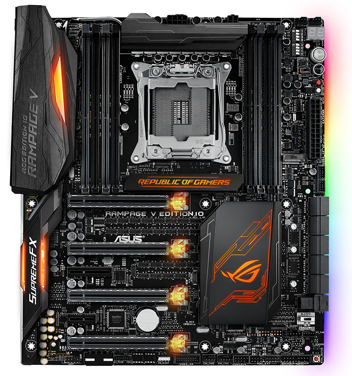
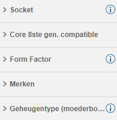
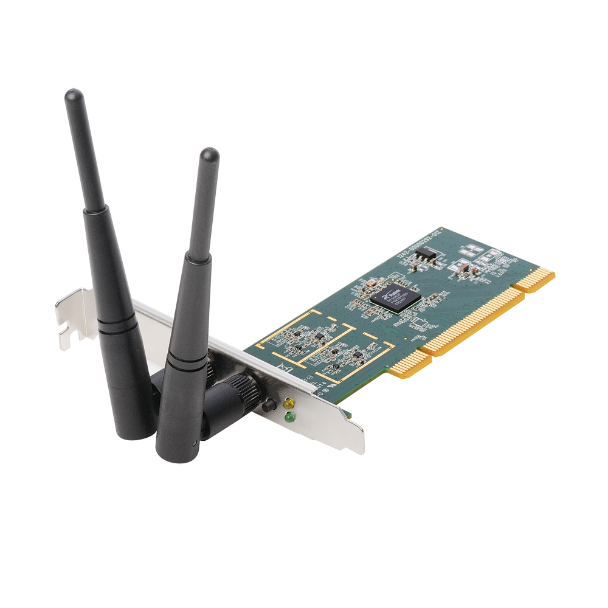

Moederbord kiezen
Kenmerken
Het moederbord is het bloedvatenstelsel van de computer, het zorgt ervoor dat alles op je juiste plek in de juist vorm komt. Het is een component dat in veel verschillende soorten komt, je kan de grootte kiezen, de socket, de outputs, de inputs, soort ram en nog veel meer. Bij een moederborden heb je ook soms een RGB optie, dit is alleen voor sommige mensen, dit betekent namelijk dat het moederbord in verschillende kleuren gloeit, en sommige mensen vinden dit mooi, maar dan moet je wel wat meer geld neerleggen. Meestal hoeft je moederbord maar maximaal €100 te kosten, maar je kan het ook goedkoper krijgen aangezien sommige maar €60 kosten.
Filters
De maat van grootte van moederborden is ATX, daarvan is ATX de basis maat, dan is er 1 maat groter: EATX, maar dit is zo ontzettend groot dat je het beter niet kan gebruiken. Dan zijn er nog 2 kleinere maten: Micro-ATX en Mini-ITX, Micro-ATX is de beste keuze qua kleinere moederborden aangezien Mini-ITX zo ontzettend klein is dat het gewoon onhandig is. Dus voor moederbord maat kan je het beste ATX of Micro-ATX nemen. Dus zet dat maar tussen je filters. Dan moet je de Socket van je CPU ook instellen bij je filters. En als je CPU Integrated Graphics heeft kan je ook de outputs van video op je moederbord instellen in je filters, anders hoeft dit niet. Dan is er nog 1 extra belangrijke optie, wat voor ram je hebt, de vormen van ram die tegenwoordig worden gebruikt zijn DDR3 en DDR4, maar DDR3 is inmiddels al redelijk oud en daarom is het aan te raden te gaan voor DDR4, dit kan je ook instellen bij je filters. Als je een videokaart wilt nemen moet je wel even kijken of je moederbord een PCI-e ingang heeft, want dat is de poort voor je videokaart, dit kan je ook bij je filters instellen. En als je dit dus wilt kan je ook een RGB optie bij je filters instellen.
Merken
De grootste merken van moederborden zijn AsRock, MSI, GigaByte en Asus. Geen hiervan is per se het beste maar ze verschillen wel in design, zo hebben MSI en AsRock bijna altijd een zwart-wit thema, GigaByte heeft vaak meer RGB, en Asus heeft vaak een rood-zwart thema (aangezien deze 2 kleuren heel vaak in Gaming-PCs zitten staan ze ook wel bekend als de Gaming Kleuren).
Maar qua merken is wel aan te raden dat je bij deze merken blijft.
Internet
Internet kan via 2 manieren bij je computer komen: via de lucht (met WiFi) of via een kabel (met Ethernet). Als je een computer op deze manier bouwt krijg je altijd bij je moederbord een Ethernet ingang, maar je krijgt niet meteen WiFi, wat je waarschijnlijk het meeste zal gebruiken. Om WiFi te krijgen heb je 2 opties: je kan een moederbord zoeken die een Netwerkadapter ingebouwd heeft, maar veel hebben dit niet en vaak is het prijsverschil te groot, optie 2 is dat je een Netwerkadapter los erbij koopt, deze gaat dan in een PCI input op je moederbord (bij je videokaart), maar dus niet in een PCI-e input, want dat is veel te groot. Netwerkadapters kan je vinden onder ‘Pricewatch’ ➡ ‘Componenten en randapparatuur’ ➡ ‘Netwerk’. Het is van groot belang dat je een Netwerkadapter neemt die niet via USB werkt, en 1Gbps of hoger heeft, want anders wordt je WiFi langzaam. En zorg er ook voor dat je Netwerkadapter antennes heeft, want anders gaat het sowieso nooit werken.
Dit was Stap 3 van Deel 1, je kan nu doorgaan naar de volgende stap.